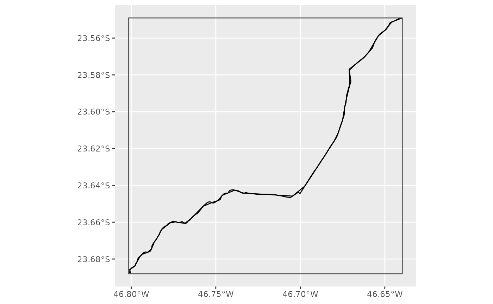
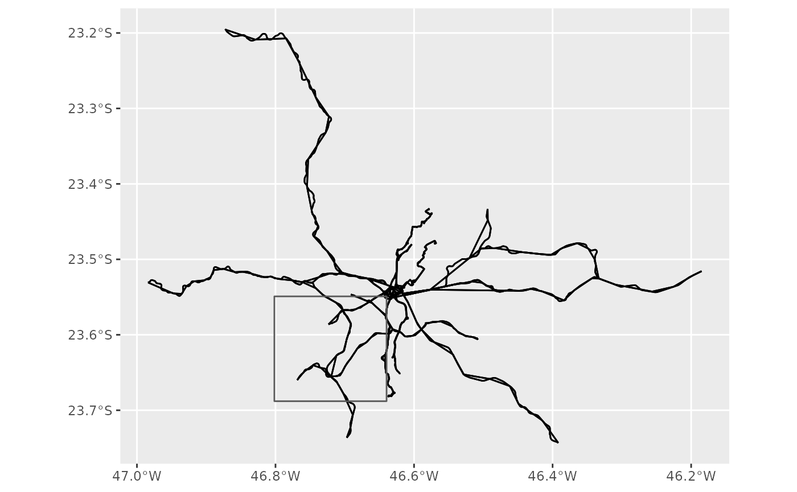
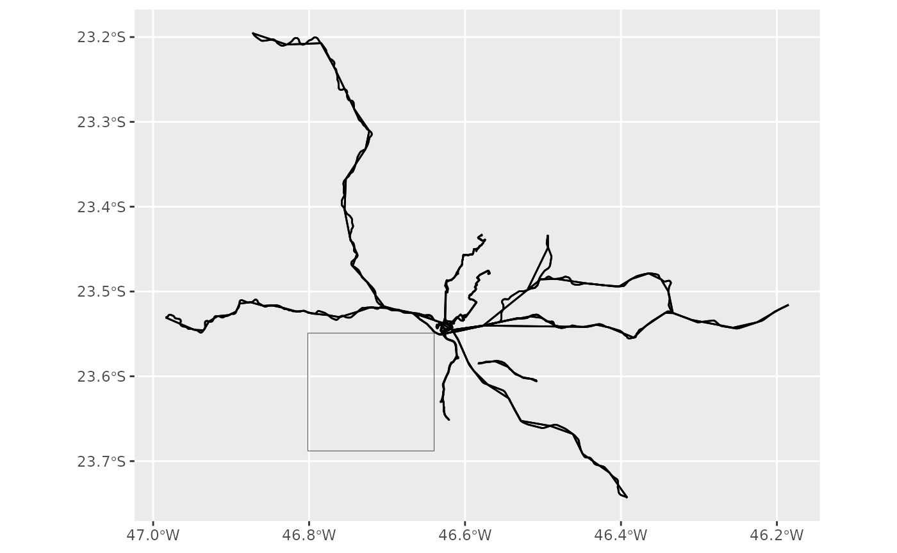
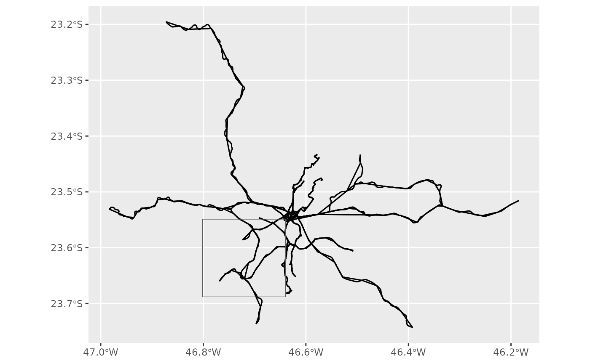

GTFS feeds are often used to describe very large and complex public transport networks. These large files can become quite cumbersome to use, manipulate and move around, and it’s not unfrequent that one wants to analyze a specific subset of the data.
gtfstools includes a few functions to filter GTFS feeds, thus allowing for faster and more convenient data processing. The filtering functions currently available are:
filter_by_agency_id()filter_by_route_id()filter_by_service_id()filter_by_shape_id()filter_by_stop_id()filter_by_trip_id()filter_by_route_type()filter_by_weekday()filter_by_time_of_day()filter_by_sf()
This vignette will introduce you to these functions and will cover their usage in detail.
We will start by loading the packages required by this demonstration into the current R session:
Filtering by agency_id, route_id,
service_id, shape_id, stop_id,
trip_id or route_type:
The first six work in a very similar fashion. You specify a vector of
identifiers, and the function keeps (or drops, as we’ll see soon) all
the entries that are in any way related to this id. Let’s see how that
works using filter_by_trip_id():
path <- system.file("extdata/spo_gtfs.zip", package = "gtfstools")
gtfs <- read_gtfs(path)
utils::object.size(gtfs)
#> 811304 bytes
head(gtfs$trips[, .(trip_id, trip_headsign, shape_id)])
#> trip_id trip_headsign shape_id
#> <char> <char> <char>
#> 1: CPTM L07-0 JUNDIAI 17846
#> 2: CPTM L07-1 LUZ 17847
#> 3: CPTM L08-0 AMADOR BUENO 17848
#> 4: CPTM L08-1 JULIO PRESTES 17849
#> 5: CPTM L09-0 GRAJAU 17850
#> 6: CPTM L09-1 OSASCO 17851
# keeping trips CPTM L07-0 and CPTM L07-1
smaller_gtfs <- filter_by_trip_id(gtfs, c("CPTM L07-0", "CPTM L07-1"))
utils::object.size(smaller_gtfs)
#> 71592 bytes
head(smaller_gtfs$trips[, .(trip_id, trip_headsign, shape_id)])
#> trip_id trip_headsign shape_id
#> <char> <char> <char>
#> 1: CPTM L07-0 JUNDIAI 17846
#> 2: CPTM L07-1 LUZ 17847
unique(smaller_gtfs$shapes$shape_id)
#> [1] "17846" "17847"We can see from the code snippet above that the function not only
filters the trips table, but all other tables that contain
a key that can be identified via its relation to trip_id.
For example, since the trips CPTM L07-0 and
CPTM L07-1 are described by the shapes 17846
and 17847, respectively, these are the only shapes kept in
smaller_gtfs.
The function also supports the opposite behaviour: instead of keeping
the entries related to the specified identifiers, you can drop
them. To do that, set the keep argument to
FALSE:
# dropping trips CPTM L07-0 and CPTM L07-1
smaller_gtfs <- filter_by_trip_id(
gtfs,
c("CPTM L07-0", "CPTM L07-1"),
keep = FALSE
)
utils::object.size(smaller_gtfs)
#> 762576 bytes
head(smaller_gtfs$trips[, .(trip_id, trip_headsign, shape_id)])
#> trip_id trip_headsign shape_id
#> <char> <char> <char>
#> 1: CPTM L08-0 AMADOR BUENO 17848
#> 2: CPTM L08-1 JULIO PRESTES 17849
#> 3: CPTM L09-0 GRAJAU 17850
#> 4: CPTM L09-1 OSASCO 17851
#> 5: CPTM L10-0 RIO GRANDE DA SERRA 17852
#> 6: CPTM L10-1 BRÁS 17853
head(unique(smaller_gtfs$shapes$shape_id))
#> [1] "17848" "17849" "17850" "17851" "17852" "17853"And the specified trips (and their respective shapes as well) are nowhere to be seen. Please note that, since we are keeping many more entries in the second case, the resulting GTFS object, though smaller than the original, is much larger than in the first case.
The same logic demonstrated with filter_by_trip_id()
applies to the functions that filter feeds by agency_id,
route_id, service_id, shape_id,
stop_id and route_type.
Filtering by day of the week or time of the day:
Frequently enough one wants to analyze service levels on certain days
of the week or during different times of the day. The functions
filter_by_weekday() and
filter_by_time_of_day() can be used to this purpose.
The first one takes the days of the week you want to keep/drop and
also includes a combine argument that controls how
multi-day filters work. Let’s see how that works with a few
examples:
# keeping entries related to services than run on saturdays AND sundays
smaller_gtfs <- filter_by_weekday(
gtfs,
weekday = c("saturday", "sunday"),
combine = "and"
)
smaller_gtfs$calendar[, c("service_id", "sunday", "saturday")]
#> service_id sunday saturday
#> <char> <int> <int>
#> 1: USD 1 1
#> 2: _SD 1 1
#> 3: USD 1 1
#> 4: _SD 1 1
# keeping entries related to services than run EITHER on saturdays OR on sundays
smaller_gtfs <- filter_by_weekday(
gtfs,
weekday = c("sunday", "saturday"),
combine = "or"
)
smaller_gtfs$calendar[, c("service_id", "sunday", "saturday")]
#> service_id sunday saturday
#> <char> <int> <int>
#> 1: USD 1 1
#> 2: US_ 0 1
#> 3: _SD 1 1
#> 4: __D 1 0
#> 5: _S_ 0 1
#> 6: USD 1 1
#> 7: US_ 0 1
#> 8: _SD 1 1
#> 9: __D 1 0
#> 10: _S_ 0 1
# dropping entries related to services that run on saturdaus AND sundays
smaller_gtfs <- filter_by_weekday(
gtfs,
weekday = c("saturday", "sunday"),
combine = "and",
keep = FALSE
)
smaller_gtfs$calendar[, c("service_id", "sunday", "saturday")]
#> service_id sunday saturday
#> <char> <int> <int>
#> 1: U__ 0 0
#> 2: US_ 0 1
#> 3: __D 1 0
#> 4: _S_ 0 1
#> 5: U__ 0 0
#> 6: US_ 0 1
#> 7: __D 1 0
#> 8: _S_ 0 1
# dropping entries related to services than run EITHER on saturdays OR on
# sundays
smaller_gtfs <- filter_by_weekday(
gtfs,
weekday = c("sunday", "saturday"),
combine = "or",
keep = FALSE
)
smaller_gtfs$calendar[, c("service_id", "sunday", "saturday")]
#> service_id sunday saturday
#> <char> <int> <int>
#> 1: U__ 0 0
#> 2: U__ 0 0Meanwhile, filter_by_time_of_day() takes the beginning
and the end of a time block (the from and to
arguments, respectively) and keeps the entries related to trips that run
within the specified block. Please note that the function works a bit
differently depending on whether a trip’s behaviour is described using
the frequencies and the stop_times tables
together or using the stop_times table alone: the
stop_times entries of trips described in
frequencies should not be filtered, because they are just
“templates” that describe how long it takes from one stop to another
(i.e. the departure and arrival times listed there should not be
considered “as is”). Let’s see what that means with an example:
smaller_gtfs <- filter_by_time_of_day(gtfs, from = "05:00:00", to = "06:00:00")
head(smaller_gtfs$frequencies)
#> trip_id start_time end_time headway_secs
#> <char> <char> <char> <int>
#> 1: CPTM L07-0 05:00:00 05:59:00 360
#> 2: CPTM L07-1 05:00:00 05:59:00 360
#> 3: CPTM L08-0 05:00:00 05:59:00 480
#> 4: CPTM L08-1 05:00:00 05:59:00 480
#> 5: CPTM L09-0 05:00:00 05:59:00 480
#> 6: CPTM L09-1 05:00:00 05:59:00 480
# stop_times entries are preserved because they should be interpreted as
# "templates"
head(smaller_gtfs$stop_times[, c("trip_id", "departure_time", "arrival_time")])
#> trip_id departure_time arrival_time
#> <char> <char> <char>
#> 1: CPTM L07-0 04:00:00 04:00:00
#> 2: CPTM L07-0 04:08:00 04:08:00
#> 3: CPTM L07-0 04:16:00 04:16:00
#> 4: CPTM L07-0 04:24:00 04:24:00
#> 5: CPTM L07-0 04:32:00 04:32:00
#> 6: CPTM L07-0 04:40:00 04:40:00
# had the feed not had a frequencies table, the stop_times table would be
# adjusted
frequencies <- gtfs$frequencies
gtfs$frequencies <- NULL
smaller_gtfs <- filter_by_time_of_day(gtfs, from = "05:00:00", to = "06:00:00")
head(smaller_gtfs$stop_times[, c("trip_id", "departure_time", "arrival_time")])
#> trip_id departure_time arrival_time
#> <char> <char> <char>
#> 1: CPTM L07-0 05:04:00 05:04:00
#> 2: CPTM L07-0 05:12:00 05:12:00
#> 3: CPTM L07-0 05:20:00 05:20:00
#> 4: CPTM L07-0 05:28:00 05:28:00
#> 5: CPTM L07-0 05:36:00 05:36:00
#> 6: CPTM L07-0 05:44:00 05:44:00When filtering the stop_times table, we have two
options. We either keep entire trips that cross the specified time
block, or we keep only the trip segments within this block (default
behaviour). To control this behaviour you can use the
full_trips parameter:
smaller_gtfs <- filter_by_time_of_day(
gtfs,
"05:00:00",
"06:00:00",
full_trips = TRUE
)
# CPTM L07-0 trip is kept intact because it crosses the time block
head(smaller_gtfs$stop_times[, c("trip_id", "departure_time", "arrival_time")])
#> trip_id departure_time arrival_time
#> <char> <char> <char>
#> 1: CPTM L07-0 04:00:00 04:00:00
#> 2: CPTM L07-0 04:08:00 04:08:00
#> 3: CPTM L07-0 04:16:00 04:16:00
#> 4: CPTM L07-0 04:24:00 04:24:00
#> 5: CPTM L07-0 04:32:00 04:32:00
#> 6: CPTM L07-0 04:40:00 04:40:00
# dropping entries related to trips that cross the specified time block
smaller_gtfs <- filter_by_time_of_day(
gtfs,
"05:00:00",
"06:00:00",
full_trips = TRUE,
keep = FALSE
)
# CPTM L07-0 trip is gone
head(smaller_gtfs$stop_times[, c("trip_id", "departure_time", "arrival_time")])
#> trip_id departure_time arrival_time
#> <char> <char> <char>
#> 1: CPTM L09-0 04:00:00 04:00:00
#> 2: CPTM L09-0 04:03:00 04:03:00
#> 3: CPTM L09-0 04:06:00 04:06:00
#> 4: CPTM L09-0 04:09:00 04:09:00
#> 5: CPTM L09-0 04:12:00 04:12:00
#> 6: CPTM L09-0 04:15:00 04:15:00filter_by_time_of_day() also includes a
update_frequencies argument, used to control whether the
frequencies table should have its start_time
and end_time fields updated to fit inside/outside the
specified time of day. Please read the function documentation to
understand how this argument interacts with the exact_times
field.
Filtering using a spatial extent
It’s not uncommon that one wants to analyze only the transit services
of a smaller region contained inside a feed. The
filter_by_sf() function allows you to filter GTFS data
using a given spatial extent. This functions takes a spatial
sf/sfc object (or its bounding box) and
keeps/drops the entries related to shapes and trips selected via a
specified spatial operation. It may sound a bit complicated, but it’s
fairly easy to understand when shown. Let’s create an auxiliary function
to save us some typing:
plotter <- function(gtfs,
geom,
spatial_operation = sf::st_intersects,
keep = TRUE,
do_filter = TRUE) {
if (do_filter) {
gtfs <- filter_by_sf(gtfs, geom, spatial_operation, keep)
}
shapes <- convert_shapes_to_sf(gtfs)
trips <- get_trip_geometry(gtfs, file = "stop_times")
geom <- sf::st_as_sfc(geom)
ggplot() +
geom_sf(data = trips) +
geom_sf(data = shapes) +
geom_sf(data = geom, fill = NA)
}This function:
- Conditionally filters a GTFS object given a spatial object (called
geom); - Generates shapes’ and trips’ geometries as described in their respective tables;
- Generates a polygon from the bounding box;
- Plots all the
sfobjects cited above to show the effect of eachfilter_by_sf()argument in the final result.
Also, please note that our plotter() function takes the
same arguments of filter_by_sf() (with the exception of
do_filter, which is used to show the unfiltered data), as
well as the same defaults.
Let’s say that we want to filter GTFS data using the bounding box of
the shape 68962. Here’s how the unfiltered data looks like,
with the bounding box placed on top of it.
bbox <- sf::st_bbox(convert_shapes_to_sf(gtfs, shape_id = "68962"))
plotter(gtfs, bbox, do_filter = FALSE)
By default filter_by_sf() (and plotter(),
consequently) keeps all the data related to the trips and shapes that
intersect the given geometry. Here’s how it looks like:
plotter(gtfs, bbox)
#> Warning: `filter_by_sf()` was deprecated in gtfstools 1.3.0.
#> ℹ Please use `filter_by_spatial_extent()` instead.
#> ℹ For backwards compatibility reasons, usage of `filter_by_sf()` is still
#> allowed as of the current version, but the function will be removed from the
#> package in version 2.0.0.
Alternatively you can also drop such data:
plotter(gtfs, bbox, keep = FALSE)
#> Warning: `filter_by_sf()` was deprecated in gtfstools 1.3.0.
#> ℹ Please use `filter_by_spatial_extent()` instead.
#> ℹ For backwards compatibility reasons, usage of `filter_by_sf()` is still
#> allowed as of the current version, but the function will be removed from the
#> package in version 2.0.0.
You can also control which spatial operation you want to use to filter the data. This is how you’d keep the data that is contained inside the given geometry:
plotter(gtfs, bbox, spatial_operation = sf::st_contains)
#> Warning: `filter_by_sf()` was deprecated in gtfstools 1.3.0.
#> ℹ Please use `filter_by_spatial_extent()` instead.
#> ℹ For backwards compatibility reasons, usage of `filter_by_sf()` is still
#> allowed as of the current version, but the function will be removed from the
#> package in version 2.0.0.And, simultaneously using spatial_operation and
keep, this is how you’d drop the data contained inside the
geometry:
plotter(gtfs, bbox, spatial_operation = sf::st_contains, keep = FALSE)
#> Warning: `filter_by_sf()` was deprecated in gtfstools 1.3.0.
#> ℹ Please use `filter_by_spatial_extent()` instead.
#> ℹ For backwards compatibility reasons, usage of `filter_by_sf()` is still
#> allowed as of the current version, but the function will be removed from the
#> package in version 2.0.0.
All filtering functions return a GTFS object readily available to be manipulated and analyzed using the rest of gtfstools’ toolkit. For more information on how to use other functions made available by the package, please see the introductory vignette.